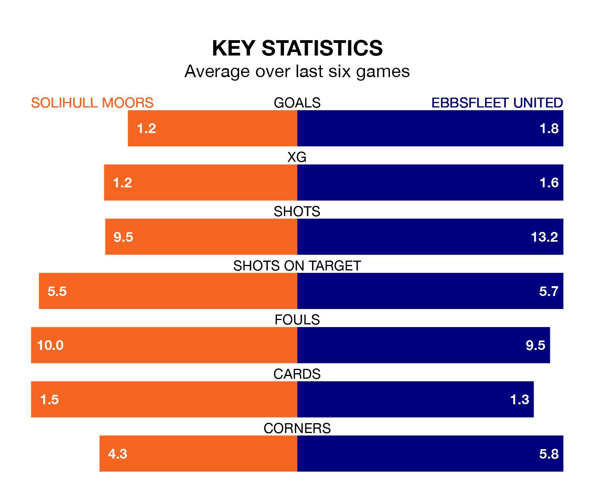

Solihull Moors host Ebbsfleet United on Tuesday at the ARMCO Arena in the National League.
In their last league match, on April 1, Solihull Moors beat Wealdstone 1-0 away, with their goal scored by Jamey Osborne.
Ebbsfleet also won, 2-1 at home against Fylde on Saturday, with Benjamin Scott Chapman (two) scoring their goals.
In the last 10 years, Solihull Moors and Ebbsfleet have played each other on six occasions. Solihull Moors won four of them and Ebbsfleet two.
On average, the Moors scored 1.3 goals and Ebbsfleet 1.2 in those matches.
Their last meeting was on August 12, when Solihull Moors won 2-1 away.
With 67 goals in 43 games so far this season, Solihull Moors are scoring more than average in the league with 1.6 goals per game. And they are conceding fewer than average, letting in 59 goals at a rate of 1.4 per game.
Ebbsfleet, meanwhile, are below average scorers, with 1.4 goals per game, compared to a league average of 1.5. They have conceded 1.6 goals per game.
The Moors are fifth in the table after 43 games, of which they have won 19 and drawn 13, earning 70 points.
United are 13 places behind the home team in 18th, with 14 wins and 10 draws putting them on 52 points.
Solihull Moors are in mixed form in the National League, with two wins and three draws from their last six games.
With three wins and two draws over that period, the visitors' form is slightly better – they have taken 11 points from 18, compared to Solihull Moors's nine.
Updated: 14:47 (UTC), 09/04/24